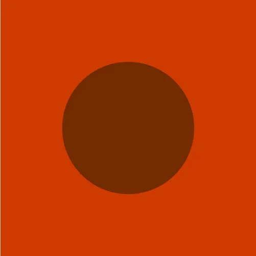

You don't need colors to communicate
Only if you want to do it right.
Imagine this: You’re given a circle on a square canvas. What can you do
with it if you can only use black and white? Surely not much. A black
circle on a white background, or a white circle on a black
background.
By itself, it doesn’t mean much, doesn’t it? Perhaps the white circle is
the moon in the night sky. Maybe the black circle on the white
background is… Well, a dot on white paper.
Image 1: white circle on black background; Image 2: black circle on
white background.
But now add some color to it. Blues, reds, yellows,... (You're familiar
with colors, aren't you?) Suddenly, a simple circle is not so simple
anymore. It’s… Complex!
Now, a circle can be a giant celestial body. It can be the sun, as you
see it from your front door. Or Mars, our rusty pal. Or Neptune, who is
“just” around the corner. Just two colors and we've already traveled
over four billion kilometers.
Image 3: yellow circle on bright blue background; Image 4: red-ish
circle on dark blue background; Image 5: blue circle on dark blue
background.
Thanks to colors (thank you colors!) a circle can be as big as the sun
or as small as a golf ball ready to be putted. Or a meatball in tomato
sauce. It can also be Japan (you were waiting for this one, weren’t
you?…)

Image 6: white circle on green background; Image 7; dark brown circle
on dark red background; Image 8: bright red circle on white
background.
But communication isn’t only made up of circles on solid backgrounds
(yes, I know, what a shock!)
Let’s not define what a letter is, but from a very simplistic point of
view, a letter is just like a circle, except that it has a specific
meaning attached to it, whereas a circle, as we saw, can be many things.
Combine several letters and you now have a word. Congratulations, you’re
a writer!
By itself, a word already has a meaning, so, using colors isn’t
necessary to communicate. Right? Well, right. But also wrong! Sure, you
don’t need colors to say “Attention! There’s too much CO2 in this
garage!”, but let’s take a look below, shall we?
Image 9 and 10: two similar images with the text “Attention high CO2
levels”, the first one with black text on white background, the other
with white text on red background.
Tell the truth: where did you look first? To the colorless sign that can
pretty much pass unnoticed? Or to the yelling red sign, that is becoming
a nuisance because it makes it difficult to read this text without
looking at it? Color just saved your life!
Let’s take a look at a less dramatic scenario:
Your boss asks you to see the income reports for the last year for the
two brands that he owns. He’s already pissed at you because you ignored
the alarm clock too many times during the past few weeks. Your job is at
stake. What do you present to him?
Option A: a mess of lines;
Option B: a mess of lines that you can differentiate and follow, giving
you useful information.
Image 11 and 12: two similar images of an oversimplified graph where
the lines intersect multiple times, the first image is only using
black lines while the second image is using colored lines
I hope that you chose well because you have bills to pay. Of course this
is a hyperbole, but you get the point: Colors are crucial when it comes
to organizing data (or anything, really).
Another example: You are hired to create a giant outdoor advertisement
for a Michelin-starred restaurant that is world famous for its
meatballs, which image would you choose?
Image 13 and 14: two similar images of a plate of meatballs, the
first image is in grayscale while the second image is in color. Image
Credit: IMPOSSIBLE FOODS
This one is obvious! Who would want some gray, sad, and unpleasant
looking food when you can have such a vibrant and colorful (but still
overpriced) plate of food?
Ever wonder why McDonald's doesn’t have menus printed in grayscale?
Well, that’s why! Colors sell. And believe it or not, if you start using
colors on your menus, your profits will make up for the color cartridge
expenses. Or maybe not, don’t quote me on that… (Argh! to those big
printer companies, argh I say!)
Colors have the power to activate emotions and sensations. They have the
ability to create order where there was none. And when well used, they
also allow you to write beautiful stories using only circles (if, of
course, you’re only planning to write a story about Japanese meatballs
playing golf on Mars). But colors can also have a deeper, more poetic
sense to them: blue means sadness, white means hope, and numbers in
green on your bank account will always make you happier than red
ones.
So, yeah, you don’t need colors to communicate. Only if you want do it
right!